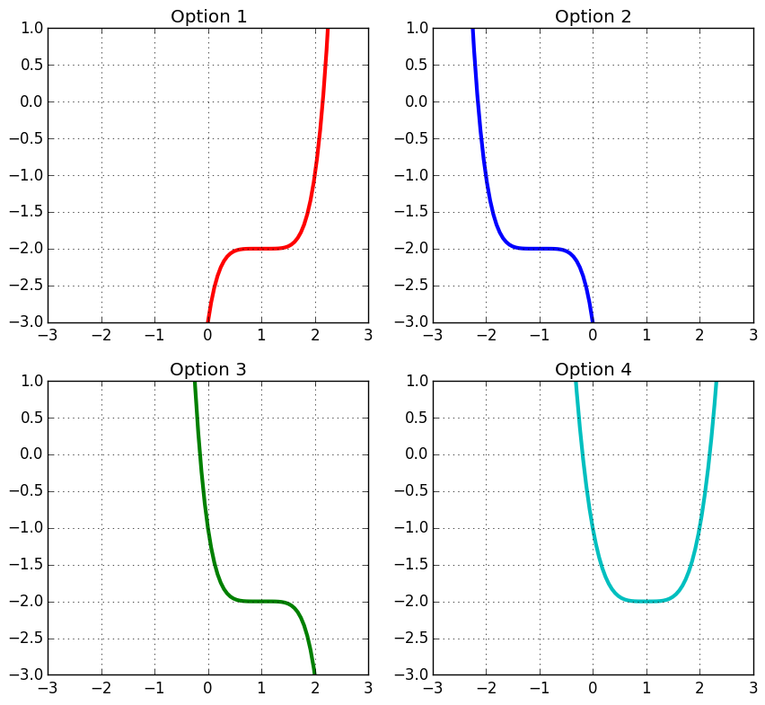
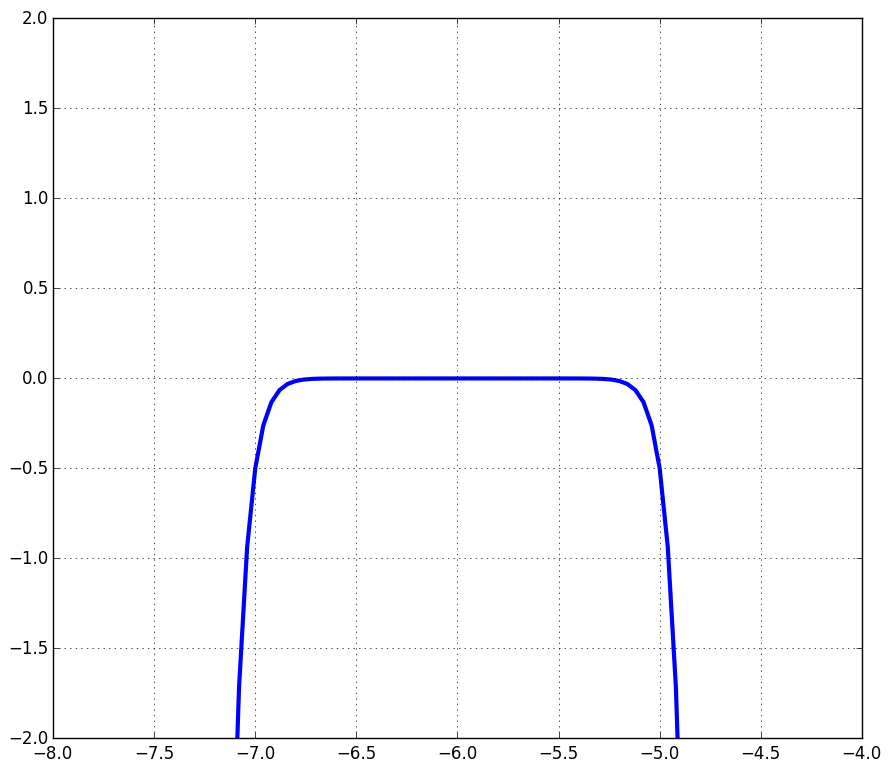

| « 3.1 | up | 3.3 » |
3.2 — Power Functions

Properties
| Functional form: | $f(x) = a(x-h)^n + k$ |
| Special case (monomial): | $h=0, k=0$, $f(x) = ax^n$ |
| Symmetry point: | $(h,k)$ |
| $n$ even | $f(x)$ has the same behavior at both "ends" for large $|x|$. |
| $n$ odd | $f(x)$ has the opposite behavior at opposite "ends" for large $|x|$. |
Select the graph of $y=-(x-1)^5-2$:

Option 3
Select the equation of the following graph:

- $y=-\frac{1}{2}(x+6)^{13}$
- $y=-\frac{1}{2}x^{16}-6$
- $y=\frac{1}{2}(x+6)^{13}$
- $y=-\frac{1}{2}(x+6)^{16}$
4.